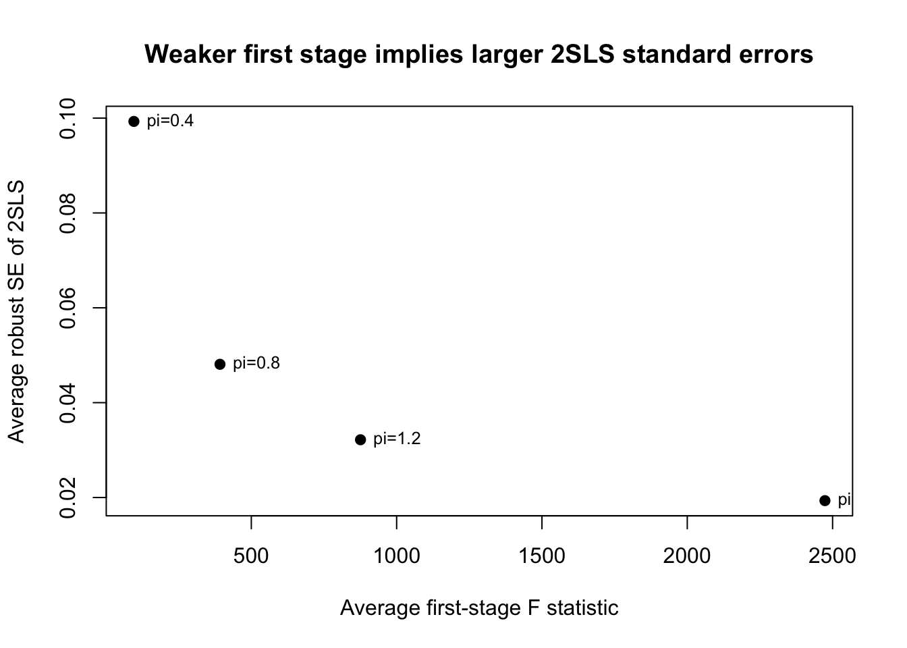
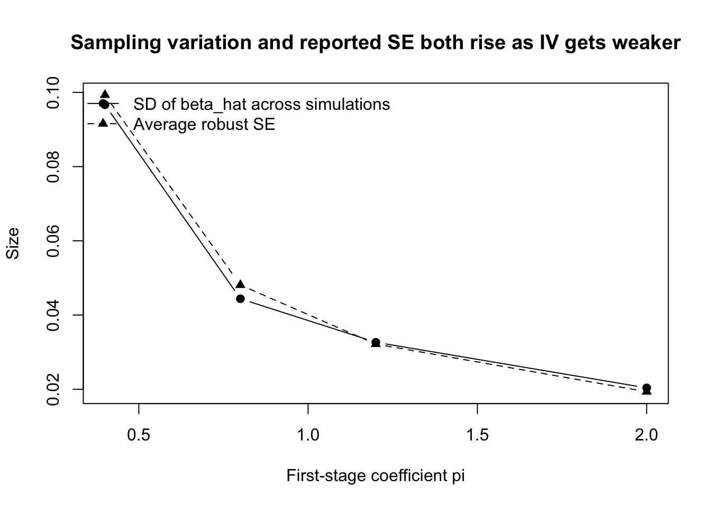

library(AER) # ivreg
library(sandwich) # robust vcov
library(lmtest) # coeftest
set.seed(123)
n <- 2000
# 真のパラメータ
beta0 <- 1
beta1 <- 2
# 外生的な操作変数
z <- rnorm(n)
# s と y の両方に入る omitted factor
a <- rnorm(n)
# 誤差
v <- rnorm(n)
u <- 0.7 * a + rnorm(n)
# 内生変数 s
# z が s を動かし、a も s を動かすので内生性がある
s <- 0.8 * z + 0.8 * a + v
# 結果変数 y
y <- beta0 + beta1 * s + u
df <- data.frame(y = y, s = s, z = z)Lecture 9：操作変数法
IV・2SLS・Weak IV・LATE
重要この講義で押さえたいこと
- IV は、内生的な説明変数のうち外生的に動いた部分だけを使って因果効果を取り出そうとする方法である。
- 2SLS は IV の実装方法だが、係数だけでなく標準誤差と first stage の強さまで含めて理解する必要がある。
- IV で識別される効果は一般に ATE ではなく LATE であり、何の平均を見ているのかを明確に読むことが大切である。
今回は Angrist and Krueger の教育収益率の例を使いながら、Wald 推定量から 2SLS、Weak IV、LATE までを一つの流れとして整理する。前半では「なぜ IV が必要か」、後半では「推定量をどう読めばよいか」を押さえる。
ノートこの lecture の流れ
- まず、OLS が内生性で失敗する状況と、IV の基本条件を確認する。
- 次に、Wald 推定量から 2SLS へ進み、標準誤差の考え方も整理する。
- 最後に、Weak IV と LATE を通じて、IV 推定量をどう解釈するかを確認する。
操作変数法
ここからは 操作変数法 (instrumental variables; IV) の話をする。
これは固定効果モデルや DiD のように、重回帰を一発回して終わり、というタイプの方法ではない。
操作変数の基本的な発想は以下の三点にまとめられる。
- 本当に知りたい説明変数 \(X_i\) には内生性がありそう
- しかし \(X_i\) を外から動かしている変数 \(Z_i\) がある
- その \(Z_i\) を使って、\(X_i\) のうち外生的に動いた部分だけを取り出したい
ここで出てくる「外生的なショックで \(X_i\) を動かしてくれる変数 \(Z_i\)」のことを操作変数と呼ぶ。英語で instrumental variable、略して IV である。
残念ながら操作変数法を一般的な形で説明するのはかなり大変である。
そこでここでは、以前扱った Angrist and Krueger (1991) の教育収益率の話を題材にしながら、操作変数法の考え方を学ぶ。
そしてその具体的な実装として、最も標準的に使われる 2段階最小二乗法 (two-stage least squares; 2SLS) を導入する。
なぜ操作変数法が必要なのか
教育の収益率を知りたいとしよう。
個人 \(i\) について、対数賃金を \(y_i\)、教育年数を \(s_i\) と書く。 すると最も素朴には、次の回帰を考えたくなる。
\[ y_i = \beta_0 + \beta_1 s_i + u_i \]
ここで \(\beta_1\) は、教育年数が 1 年増えたときに対数賃金がどれだけ上がるかを表す。
しかし、この回帰を OLS で推定しても、\(\beta_1\) を教育の因果効果として解釈してよいとは限らない。 問題は、教育年数 \(s_i\) がランダムに決まっているわけではないことである。
例えば、
- 生まれつきの能力
- 家庭環境
- 勉強への意欲
- 将来への見通し
- 親の教育熱心さ
のような観測されない要因が、教育年数にも賃金にも影響しているかもしれない。
これらを全部誤差項 \(u_i\) に押し込めると、教育年数 \(s_i\) と誤差項 \(u_i\) が相関してしまう。 つまり OLS が必要とする
\[ E[u_i \mid s_i] = 0 \]
という外生性条件が怪しい。
このとき、OLS は相関を拾ってはいても、教育の因果効果をきれいに取り出しているとは言えない。
Angrist and Krueger の発想
Angrist and Krueger (1991) は、教育年数のうち 本人の能力や家庭環境とは別の理由で動いている部分 を利用して、教育の効果を推定しようとした。
彼らの鍵となるアイディアは、出生四半期 と 就学義務年限法 の組み合わせである。
アメリカでは、州ごとの制度にもよるが、ある年齢に達するまで学校に通わなければならない。 また、入学時期は生まれた時期によって異なる。 そのため、同じ学年に属していても、年の早い時期に生まれた人と遅い時期に生まれた人では、最低就学年限を満たして離学できるタイミングに少し差が生まれる。
その結果、出生四半期は平均的な教育年数にわずかな差を生む。
ここで重要なのは、出生四半期そのものは、少なくとも教育選択ほどには本人の能力や努力とは結びついていないだろう、という点である。
そこで Angrist and Krueger は、出生四半期を 操作変数 として使う。
操作変数とは何か
操作変数法では、内生的な説明変数 \(s_i\) の代わりに、それを外から動かしている変数 \(z_i\) を使う。
この \(z_i\) が操作変数として有効であるためには、大きく 2 つの条件が必要である。
1. 関連性
操作変数 \(z_i\) は、説明変数 \(s_i\) をちゃんと動かしていなければならない。
数式で書けば、
\[ \operatorname{Cov}(z_i, s_i) \neq 0 \]
である。
Angrist and Krueger の文脈では、出生四半期が教育年数に影響していることがこれに対応する。
2. 外生性
操作変数 \(z_i\) は、説明変数 \(s_i\) を通じて結果変数 \(y_i\) に影響するのはよいが、それ以外の経路で直接 \(y_i\) に効いてはいけない。
数式でざっくり書けば、
\[ \operatorname{Cov}(z_i, u_i) = 0 \]
である。
Angrist and Krueger の文脈では、出生四半期は教育年数を通じて賃金に影響することはありうるが、出生四半期それ自体が直接賃金を決めるとは考えにくい、という議論になる。
もちろん、この条件はデータだけでは完全には確認できない。 だから操作変数法では、なぜその変数を操作変数だと信じてよいのか という制度的・経済学的な議論が極めて重要になる。
最も単純な IV 推定量
操作変数 \(z_i\) が有効であるとする。
つまり、\(z_i\) は教育年数 \(s_i\) を動かしつつ、賃金方程式の誤差項 \(u_i\) とは相関しないとする。
回帰の式は
\[ y_i = \beta_0 + \beta_1 s_i + u_i \]
である。
このとき、外生性の条件は
\[ \operatorname{Cov}(z_i, u_i) = 0 \]
と書ける。
この条件を使うと、\(\beta_1\) を共分散の比として表せる。 実際、
\[ \operatorname{Cov}(z_i, y_i) = \operatorname{Cov}(z_i, \beta_0 + \beta_1 s_i + u_i) \]
であるから、共分散の線形性より
\[ \operatorname{Cov}(z_i, y_i) = \operatorname{Cov}(z_i, \beta_0) + \operatorname{Cov}(z_i, \beta_1 s_i) + \operatorname{Cov}(z_i, u_i) \]
となる。ここで、
- 定数との共分散は \(0\)
- \(\operatorname{Cov}(z_i, \beta_1 s_i) = \beta_1 \operatorname{Cov}(z_i, s_i)\)
- 外生性より \(\operatorname{Cov}(z_i, u_i)=0\)
なので、
\[ \operatorname{Cov}(z_i, y_i) = \beta_1 \operatorname{Cov}(z_i, s_i) \]
が得られる。
したがって、\(\operatorname{Cov}(z_i, s_i) \neq 0\) であれば、
\[ \beta_1 = \frac{\operatorname{Cov}(z_i, y_i)}{\operatorname{Cov}(z_i, s_i)} \]
と書ける。
これが最も基本的な IV 推定量である。\(\beta_{IV}\) とかくことが多い。
さらに、操作変数 \(z_i\) が 0/1 のダミー変数であるとき、これは lecture 1 で見た Wald 推定量 と同じものになる。
操作変数がダミー変数のとき、なぜ「グループ平均の差の比」になるのか
ここで \(z_i \in \{0,1\}\) であるとする。 たとえば
- \(z_i=1\) のグループ
- \(z_i=0\) のグループ
を比べていると思えばよい。
このとき、任意の変数 \(x_i\) について
\[ \operatorname{Cov}(z_i, x_i) = P(z_i=1)P(z_i=0)\left( E[x_i \mid z_i=1] - E[x_i \mid z_i=0] \right) \]
が成り立つ。
これを \(x_i=y_i\) と \(x_i=s_i\) にそれぞれ適用すると、
\[ \operatorname{Cov}(z_i, y_i) = P(z_i=1)P(z_i=0)\left( E[y_i \mid z_i=1] - E[y_i \mid z_i=0] \right) \]
および
\[ \operatorname{Cov}(z_i, s_i) = P(z_i=1)P(z_i=0)\left( E[s_i \mid z_i=1] - E[s_i \mid z_i=0] \right) \]
である。
したがって共分散比は
\[ \frac{\operatorname{Cov}(z_i, y_i)}{\operatorname{Cov}(z_i, s_i)} = \frac{ P(z_i=1)P(z_i=0)\left( E[y_i \mid z_i=1] - E[y_i \mid z_i=0] \right) }{ P(z_i=1)P(z_i=0)\left( E[s_i \mid z_i=1] - E[s_i \mid z_i=0] \right) } \]
となり、分子分母の共通因子 \(P(z_i=1)P(z_i=0)\) が打ち消し合うので、
\[ \frac{\operatorname{Cov}(z_i, y_i)}{\operatorname{Cov}(z_i, s_i)} = \frac{ E[y_i \mid z_i=1] - E[y_i \mid z_i=0] }{ E[s_i \mid z_i=1] - E[s_i \mid z_i=0] } \]
を得る。
これが lecture 1 で見た グループ平均の差として書かれた Wald 推定量 である。
つまり、
\[ \beta_1 = \frac{\operatorname{Cov}(z_i, y_i)}{\operatorname{Cov}(z_i, s_i)} \]
という書き方と、
\[ \beta_1 = \frac{ E[y_i \mid z_i=1] - E[y_i \mid z_i=0] }{ E[s_i \mid z_i=1] - E[s_i \mid z_i=0] } \]
という書き方は、操作変数が 0/1 ダミーのときはまったく同じもの である。
直感
この比が何をしているかを言葉で言うと、
- 操作変数 \(z_i\) が結果変数 \(y_i\) をどれだけ動かしたか
- 操作変数 \(z_i\) が教育年数 \(s_i\) をどれだけ動かしたか
を比べることで、教育年数 1 年あたりの効果 を取り出している。
lecture 1 ではこれを「2グループの平均との差の比」として見た。 今はそれを、より一般的に 共分散比 として書き直している。
この共分散比の形にしておくと、
- コントロール変数を入れる
- 操作変数を複数使う
- 重回帰の記法で書く
といった一般化がしやすい。
その一般化された実装が、次に学ぶ 2段階最小二乗法 (2SLS) である。
重要ここからは IV の実装
Wald 推定量の発想を一般の回帰設定で実装したものが 2SLS である。第1段階で内生変数の外生的な動きだけを取り出し、第2段階でその部分を使って結果変数との関係を見る、という二段構えで考えると理解しやすい。
2段階最小二乗法 (2SLS)
2SLS は、操作変数法を重回帰の形で実装するための標準的な方法である。
ここでは、結果変数を \(y_i\)、内生変数を \(s_i\)、外生的なコントロール変数のベクトルを \(X_i\)、操作変数のベクトルを \(Z_i\) と書く。
推定したい式は
\[ y_i = \beta_0 + \beta_1 s_i + \gamma' X_i + u_i \]
である。
ここでの問題は、\(s_i\) が内生的であって \(u_i\) と相関しているかもしれない、という点にある。
2SLS は、この \(s_i\) をそのまま使うのではなく、まず \(Z_i\) と \(X_i\) で説明できる部分だけを取り出し、その外生的な部分で \(y_i\) を説明する。
第1段階
第1段階では、内生変数 \(s_i\) を操作変数 \(Z_i\) とコントロール変数 \(X_i\) で回帰する。
\[ s_i = \pi_0 + \Pi' Z_i + \delta' X_i + v_i \]
ここで得られる予測値を
\[ \hat{s}_i \]
と書く。
この \(\hat{s}_i\) は、教育年数 \(s_i\) のうち、出生四半期などの外生的な変動とコントロール変数によって説明できる部分である。
言い換えれば、教育年数の中でも比較的きれいな外生変動だけを抜き出したもの である。
第2段階
第2段階では、元の式の \(s_i\) の代わりに、第１段階から得られた予測値 \(\hat{s}_i\) を使って回帰する。
\[ y_i = \beta_0 + \beta_1 \hat{s}_i + \gamma' X_i + \varepsilon_i \]
この回帰で得られる \(\hat{s}_i\) の係数が、2SLS による \(\beta_1\) の推定値である。
これは IV 推定量と一致している？
最も単純な場合には、2SLS 推定量は IV 推定量と一致する。 それを式で確認してみよう。
ここでは簡単のため、
- コントロール変数 \(X_i\) は入れない
- 内生変数は 1 つだけで、それを \(s_i\) と書く
- 操作変数も 1 つだけで、それを \(z_i\) と書く
ことにする。
推定したい式は
\[ y_i = \beta_0 + \beta_1 s_i + u_i \]
である。
2SLS 推定量の形
第1段階では
\[ s_i = \pi_0 + \pi_1 z_i + v_i \]
を OLS で推定し、その予測値を
\[ \hat{s}_i = \hat{\pi}_0 + \hat{\pi}_1 z_i \]
とする。
第2段階では
\[ y_i = \beta_0 + \beta_1 \hat{s}_i + \varepsilon_i \]
を OLS で推定する。
したがって、2SLS 推定量 \(\hat{\beta}_{2SLS}\) は、「\(y_i\) を \(\hat{s}_i\) に回帰したときの OLS 係数」だから、
\[ \hat{\beta}_{2SLS} = \frac{\sum_i (\hat{s}_i-\bar{\hat{s}})(y_i-\bar{y})} {\sum_i (\hat{s}_i-\bar{\hat{s}})^2} \]
である。
第1段階の予測値を代入する
第1段階の予測値は
\[ \hat{s}_i = \hat{\pi}_0 + \hat{\pi}_1 z_i \]
なので、その平均は
\[ \bar{\hat{s}} = \hat{\pi}_0 + \hat{\pi}_1 \bar{z} \]
である。よって、
\[ \hat{s}_i - \bar{\hat{s}} = \hat{\pi}_1 (z_i-\bar{z}) \]
となる。
これを 2SLS 推定量の式に代入すると、
\[ \hat{\beta}_{2SLS} = \frac{\sum_i \hat{\pi}_1 (z_i-\bar{z})(y_i-\bar{y})} {\sum_i \hat{\pi}_1^2 (z_i-\bar{z})^2} \]
すなわち
\[ \hat{\beta}_{2SLS} = \frac{\hat{\pi}_1 \sum_i (z_i-\bar{z})(y_i-\bar{y})} {\hat{\pi}_1^2 \sum_i (z_i-\bar{z})^2} = \frac{\sum_i (z_i-\bar{z})(y_i-\bar{y})} {\hat{\pi}_1 \sum_i (z_i-\bar{z})^2} \]
を得る。
第1段階の OLS 係数を使う
第1段階回帰
\[ s_i = \pi_0 + \pi_1 z_i + v_i \]
における OLS 係数 \(\hat{\pi}_1\) は、
\[ \hat{\pi}_1 = \frac{\sum_i (z_i-\bar{z})(s_i-\bar{s})} {\sum_i (z_i-\bar{z})^2} \]
である。
したがって
\[ \hat{\pi}_1 \sum_i (z_i-\bar{z})^2 = \sum_i (z_i-\bar{z})(s_i-\bar{s}) \]
であるから、先ほどの式は
\[ \hat{\beta}_{2SLS} = \frac{\sum_i (z_i-\bar{z})(y_i-\bar{y})} {\sum_i (z_i-\bar{z})(s_i-\bar{s})} \]
となる。
これはまさに、サンプル共分散を使った IV 推定量
\[ \hat{\beta}_{IV} = \frac{\widehat{\operatorname{Cov}}(z_i,y_i)} {\widehat{\operatorname{Cov}}(z_i,s_i)} \]
である。
したがって、1つの操作変数、1つの内生変数、コントロールなし の場合には、
\[ \hat{\beta}_{2SLS} = \hat{\beta}_{IV} \]
が成り立つ。
2SLS は一般の IV 法のどういう意味で特殊ケースか
ここまで見ると、2SLS が操作変数法そのものに見えるかもしれない。 実際、実証研究では IV と 2SLS がほとんど同義のように使われることも多い。
ただし厳密には、IV 法はもっと広い概念である。
IV 法の本質は、操作変数 \(Z_i\) を使って
\[ E[Z_i u_i] = 0 \]
というモーメント条件を立て、それを使って構造パラメータを識別・推定することにある。
その中で 2SLS は、
- モデルが線形で
- 結果変数も説明変数も線形に入っていて
- 操作変数も線形に使われる
という状況での、最も標準的な推定法である。
つまり、
- IV 法 は考え方の総称
- 2SLS はそのうち線形回帰モデルで使う代表的な実装
という関係にある。
一般的な操作変数法についてはこの授業では触れない。院の授業を受けよう。
何が難しいのか
2SLS の計算手順自体はそれほど難しくない。重回帰を２回やるだけだからである。
難しいのは、有効な操作変数を見つけること である。
操作変数法では、常に次の 2 つを問わなければならない。
- その操作変数は本当に説明変数を動かしているのか
- その操作変数は本当に結果変数に直接効いていないのか
第1の条件はある程度データで確認できる。 しかし第2の条件は、最終的には制度的背景や経済学的な説得力に依存する。
だから操作変数法では、回帰式よりもむしろ
なぜその変数が「外から与えられた変動」とみなせるのか
を説明することが重要になる。
警告ここは機械的に OLS と同じにしない
第2段階で予測値を使っているからといって、そこを普通の OLS だと思って標準誤差を読むのは誤りである。2SLS では 第1段階の推定誤差 も反映した標準誤差が必要になる。
2SLS の標準誤差
2slsは重回帰が２回あるので、重回帰の標準誤差の公式そのものを当てはめることができない。ここでは2slsの標準誤差の計算方法について述べる。
2SLS では、第1段階で
\[ s_i = \pi_0 + \Pi' Z_i + \delta' X_i + v_i \]
を推定し、その予測値 \(\hat{s}_i\) を作ったうえで、第2段階で
\[ y_i = \beta_0 + \beta_1 \hat{s}_i + \gamma' X_i + \varepsilon_i \]
を推定する。
このとき、見た目だけ見ると 「第2段階は \(y_i\) を \(\hat{s}_i\) と \(X_i\) に回帰しているだけなのだから、普通の OLS と同じように標準誤差を計算すればよいのではないか」 と思いたくなる。
しかし、それは一般には正しくない。
なぜ第2段階を普通の OLS だと思ってはいけないのか
理由は単純である。 第2段階で使っている \(\hat{s}_i\) は、最初から与えられた固定の説明変数ではない。 これは第1段階で推定された係数
\[ \hat{\pi}_0,\ \hat{\Pi},\ \hat{\delta} \]
を使って作られた 推定量 である。
つまり、第2段階では説明変数そのものに第1段階の推定誤差が入り込んでいる。
もし \(\hat{s}_i\) を、あたかも完全に観測された固定変数であるかのように扱って OLS の標準誤差を計算すると、この第1段階の不確実性を無視してしまう。 その結果、標準誤差がずれてしまう。
2SLS の推定量は、「第2段階の OLS」ではあるが、標準誤差まで OLS と同じ扱いをしてよいわけではない。
2SLS の標準誤差はどう計算するのか
2SLS では、「使ってよい説明変数の変動」は \(s_i\) 全体ではなく、操作変数 \(Z_i\) によって生み出された外生的な部分だけである。
したがって、標準誤差の式も、OLS のときの「残差の分散 ÷ 説明変数の分散」という形をそのまま使うのではなく、操作変数で説明できる部分だけを使った形 になる。
まずは一番単純な場合
最初に、話をわかりやすくするために
- 内生変数は 1 つだけで \(s_i\)
- コントロール変数はない
- 操作変数は 1 つだけで \(z_i\)
という場合を考える。
このとき、構造式は
\[ y_i = \beta_0 + \beta_1 s_i + u_i \]
であり、2SLS 推定量は
\[ \hat{\beta}_{2SLS} = \frac{\sum_i (z_i-\bar z)(y_i-\bar y)} {\sum_i (z_i-\bar z)(s_i-\bar s)} \]
と書けた。
この推定量のばらつきを考えると、同分散のもとでは、その分散はおおまかに
\[ \operatorname{Var}(\hat{\beta}_{2SLS}) \approx \frac{\sigma_u^2 \sum_i (z_i-\bar z)^2} {\left[\sum_i (z_i-\bar z)(s_i-\bar s)\right]^2} \]
という形になる。
ここで \(\sigma_u^2\) は構造誤差 \(u_i\) の分散である。
したがって標準誤差は
\[ \operatorname{se}(\hat{\beta}_{2SLS}) \approx \sqrt{ \frac{\sigma_u^2 \sum_i (z_i-\bar z)^2} {\left[\sum_i (z_i-\bar z)(s_i-\bar s)\right]^2} } \]
となる。
OLS との違いは、分母が単なる \(s_i\) のばらつきではなく、 \(z_i\) と \(s_i\) の共変動 になっている点である。 つまり、教育年数 \(s_i\) のうち、操作変数で動かされた部分の大きさが、推定精度を決めている。
実際には \(\sigma_u^2\) はわからない
もちろん、母集団の誤差分散 \(\sigma_u^2\) は未知である。 そこで実際には、推定された残差を使ってこれを置き換える。
2SLS の推定値 \(\hat{\beta}_0,\hat{\beta}_1\) が得られたら、構造式の残差を
\[ \hat{u}_i = y_i - \hat{\beta}_0 - \hat{\beta}_1 s_i \]
と定義する。
ここで大事なのは、残差は \(\hat{s}_i\) ではなく元の \(s_i\) を使った構造式の残差 として考えることである。 2SLS が推定しているのはあくまで
\[ y_i = \beta_0 + \beta_1 s_i + u_i \]
という構造式だからである。
同分散を仮定するなら、\(\sigma_u^2\) の推定量として
\[ \hat{\sigma}_u^2 = \frac{1}{n-k} \sum_i \hat{u}_i^2 \]
を使う。 ここで \(k\) は推定した係数の個数である。最も単純な場合なら \(k=2\) である。
したがって、実際の標準誤差は
\[ \widehat{\operatorname{se}}(\hat{\beta}_{2SLS}) = \sqrt{ \frac{\hat{\sigma}_u^2 \sum_i (z_i-\bar z)^2} {\left[\sum_i (z_i-\bar z)(s_i-\bar s)\right]^2} } \]
となる。
コントロール変数があるときはどうするか
実際には、2SLS ではコントロール変数 \(X_i\) を入れることが多い。 このときも考え方は同じである。 ただし、\(y_i\)、\(s_i\)、\(z_i\) をそのまま比べるのではなく、まずコントロール変数 \(X_i\) の影響を取り除いた後の変数同士で考える。
具体的には、
- \(y_i\) を \(X_i\) に回帰した残差を \(\tilde y_i\)
- \(s_i\) を \(X_i\) に回帰した残差を \(\tilde s_i\)
- \(z_i\) を \(X_i\) に回帰した残差を \(\tilde z_i\)
とする。
これは、「\(X_i\) で説明できる部分を落としたあとに残る変動」を意味する。 重回帰の Frisch–Waugh–Lovell の定理と同じ発想である。
すると、コントロール付きの 2SLS 推定量は
\[ \hat{\beta}_{2SLS} = \frac{\sum_i \tilde z_i \tilde y_i} {\sum_i \tilde z_i \tilde s_i} \]
と書ける。
そして、同分散のもとでの分散は
\[ \operatorname{Var}(\hat{\beta}_{2SLS}) \approx \frac{\sigma_u^2 \sum_i \tilde z_i^2} {\left(\sum_i \tilde z_i \tilde s_i\right)^2} \]
となる。 したがって標準誤差は
\[ \operatorname{se}(\hat{\beta}_{2SLS}) \approx \sqrt{ \frac{\sigma_u^2 \sum_i \tilde z_i^2} {\left(\sum_i \tilde z_i \tilde s_i\right)^2} } \]
である。
実際には \(\sigma_u^2\) を残差から推定して
\[ \widehat{\operatorname{se}}(\hat{\beta}_{2SLS}) = \sqrt{ \frac{\hat{\sigma}_u^2 \sum_i \tilde z_i^2} {\left(\sum_i \tilde z_i \tilde s_i\right)^2} } \]
を使う。
heteroskedasticity があると何が変わるか
ここまでは、誤差項の分散がすべての観測で同じ、すなわち
\[ \operatorname{Var}(u_i \mid Z_i, X_i)=\sigma_u^2 \]
であることを仮定していた。
しかし実際のデータでは、個人によって誤差のばらつきが違うことはよくある。 たとえば高学歴の人ほど賃金のばらつきが大きい、というような状況では、不均一分散 (heteroskedasticity) が起きている。
このとき、さきほどの同分散の公式をそのまま使うと、標準誤差が正しくなくなる。 そこで、OLS のときと同じく、2SLS でも heteroskedasticity-robust standard errors を使う。
ロバスト標準誤差の考え方
コントロール変数を取り除いたあとの記法で書くと、2SLS 推定量は
\[ \hat{\beta}_{2SLS} = \frac{\sum_i \tilde z_i \tilde y_i} {\sum_i \tilde z_i \tilde s_i} \]
であった。
このとき、不均一分散に頑健な分散推定量は
\[ \widehat{\operatorname{Var}}_{\mathrm{robust}}(\hat{\beta}_{2SLS}) = \frac{ \sum_i \tilde z_i^2 \hat{u}_i^2 }{ \left(\sum_i \tilde z_i \tilde s_i\right)^2 } \]
と書ける。
したがってロバスト標準誤差は
\[ \widehat{\operatorname{se}}_{\mathrm{robust}}(\hat{\beta}_{2SLS}) = \sqrt{ \frac{ \sum_i \tilde z_i^2 \hat{u}_i^2 }{ \left(\sum_i \tilde z_i \tilde s_i\right)^2 } } \]
である。
この式を見ると、同分散のときには \(\hat{u}_i^2\) をみんな同じ \(\sigma_u^2\) で置き換えていたのに対し、 ロバスト標準誤差では 各観測ごとの残差の大きさをそのまま使っている ことがわかる。
これは OLS の White のロバスト標準誤差と同じ考え方である。 つまり「誤差の分散は一定だと決めつけず、観測ごとに違っていてよい」として分散を計算している。
2SLS の標準誤差は大きくなりやすいのか
2SLS の標準誤差は OLS より大きくなりやすい。
それは、2SLS が \(s_i\) の変動を全部使うのではなく、操作変数で説明できる部分だけ を使うからである。
上の式でも、分母には
\[ \sum_i \tilde z_i \tilde s_i \]
が入っている。
これは「操作変数がどれだけ内生変数を動かしているか」を表す量である。 もし操作変数が弱ければ、この値は小さくなる。すると分母が小さくなるので、標準誤差は大きくなる。
つまり、2SLS の精度は第1段階の強さに大きく依存している。
ノートここから一般化
操作変数が複数になると、単純な Wald 比の直感だけでは足りなくなる。関連性が強いか、過剰識別の議論をどう読むか、といった論点も見えてくる。
複数の操作変数があるとき
操作変数は別に一つじゃなくてもいい。
例えば、「教育年数」に対するIVとして、「四半期ダミー」と「双子ダミー」の二つをIVとして当てることも可能だ。
双子だと予期せずに教育負担が倍になるので比較的ランダムに教育年数を変動させてくれるので、これも有効なIVである。
しかしこのようにIVが複数あると、今までのような 1 本の比の形では書けなくなる。
こういうケースは2slsではなく操作変数法の一般的な表記で理解した方が良い。これはこの講義では扱わない。
しかし考え方は同じである。
- まず第1段階で、内生変数のうち操作変数で説明できる部分を取り出す
- その外生的な部分だけを使って第2段階を行う
- 標準誤差は、その 2 段階の推定誤差をまとめて反映するように計算する
- heteroskedasticity があるなら、各観測の残差二乗を使ったロバスト分散を使う
実際のソフトウェアでは、この一般形を自動で計算してくれる。
したがって実証では、式を手で展開するよりも、
- 同分散の標準誤差か
- heteroskedasticity-robust か
を意識して報告することが重要である。
シミュレーション
以下、二つのシミュレーションを通してIVへの理解を深める。
- 2段階で最小二乗法を実装して、IVのパッケージと同じ結果を出すか
- 2slsの標準誤差は1st stage次第ということを理解する。
シミュレーション：最も単純な 2SLS
まずは、操作変数が 1 つ、内生変数が 1 つ、コントロール変数なしという最も単純な状況を考える。
構造式は
\[ y_i = \beta_0 + \beta_1 s_i + u_i \]
であり、\(s_i\) は内生的であるとする。
操作変数 \(z_i\) は \(s_i\) を動かすが、\(u_i\) とは独立だとする。
以下では、
- 第1段階と第2段階を別々に推定する方法
ivreg()を使って一度に推定する方法
を比べる。
OLS と 2SLS を比べる
fit_ols <- lm(y ~ s, data = df)
summary(fit_ols)
Call:
lm(formula = y ~ s, data = df)
Residuals:
Min 1Q Median 3Q Max
-3.9274 -0.7785 0.0126 0.7919 3.7091
Coefficients:
Estimate Std. Error t value Pr(>|t|)
(Intercept) 0.97297 0.02592 37.54 <2e-16 ***
s 2.23789 0.01731 129.28 <2e-16 ***
---
Signif. codes: 0 '***' 0.001 '**' 0.01 '*' 0.05 '.' 0.1 ' ' 1
Residual standard error: 1.159 on 1998 degrees of freedom
Multiple R-squared: 0.8932, Adjusted R-squared: 0.8932
F-statistic: 1.671e+04 on 1 and 1998 DF, p-value: < 2.2e-16OLS では、\(s\) が omitted factor と相関しているため、係数は一般にバイアスを持つ。
次に、2SLS を手順どおりに 2 回の回帰として実装する。
# 第1段階
fit_1st <- lm(s ~ z, data = df)
df$s_hat <- fitted(fit_1st)
# 第2段階（係数だけ見るならこれでよい）
fit_2nd_manual <- lm(y ~ s_hat, data = df)
summary(fit_1st)
Call:
lm(formula = s ~ z, data = df)
Residuals:
Min 1Q Median 3Q Max
-3.6995 -0.8386 -0.0413 0.8686 4.5942
Coefficients:
Estimate Std. Error t value Pr(>|t|)
(Intercept) -0.009926 0.028619 -0.347 0.729
z 0.778580 0.028598 27.225 <2e-16 ***
---
Signif. codes: 0 '***' 0.001 '**' 0.01 '*' 0.05 '.' 0.1 ' ' 1
Residual standard error: 1.279 on 1998 degrees of freedom
Multiple R-squared: 0.2706, Adjusted R-squared: 0.2702
F-statistic: 741.2 on 1 and 1998 DF, p-value: < 2.2e-16summary(fit_2nd_manual)
Call:
lm(formula = y ~ s_hat, data = df)
Residuals:
Min 1Q Median 3Q Max
-9.4623 -2.0811 -0.0435 2.1440 11.8474
Coefficients:
Estimate Std. Error t value Pr(>|t|)
(Intercept) 0.97620 0.07137 13.68 <2e-16 ***
s_hat 1.98722 0.09162 21.69 <2e-16 ***
---
Signif. codes: 0 '***' 0.001 '**' 0.01 '*' 0.05 '.' 0.1 ' ' 1
Residual standard error: 3.191 on 1998 degrees of freedom
Multiple R-squared: 0.1906, Adjusted R-squared: 0.1902
F-statistic: 470.4 on 1 and 1998 DF, p-value: < 2.2e-16この 2 回回帰で得られる係数は、2SLS の係数と一致する。
ただし、前に見たように、第2段階の summary(lm(...)) の標準誤差は一般には正しくない。
そこで、同じモデルを ivreg() で推定する。
fit_iv <- ivreg(y ~ s | z, data = df)
summary(fit_iv, diagnostics = TRUE)
Call:
ivreg(formula = y ~ s | z, data = df)
Residuals:
Min 1Q Median 3Q Max
-4.12680 -0.81572 0.01673 0.81199 4.08623
Coefficients:
Estimate Std. Error t value Pr(>|t|)
(Intercept) 0.97620 0.02725 35.83 <2e-16 ***
s 1.98722 0.03498 56.81 <2e-16 ***
Diagnostic tests:
df1 df2 statistic p-value
Weak instruments 1 1998 741.20 <2e-16 ***
Wu-Hausman 1 1997 80.91 <2e-16 ***
Sargan 0 NA NA NA
---
Signif. codes: 0 '***' 0.001 '**' 0.01 '*' 0.05 '.' 0.1 ' ' 1
Residual standard error: 1.218 on 1998 degrees of freedom
Multiple R-Squared: 0.882, Adjusted R-squared: 0.882
Wald test: 3227 on 1 and 1998 DF, p-value: < 2.2e-16 係数を並べて比べる。
c(
OLS = coef(fit_ols)["s"],
manual_2nd_stage = coef(fit_2nd_manual)["s_hat"],
ivreg_2SLS = coef(fit_iv)["s"]
) OLS.s manual_2nd_stage.s_hat ivreg_2SLS.s
2.237895 1.987218 1.987218 標準誤差の比較
manual_2nd_stageの標準誤差は、第2段階を普通の OLS とみなしたものivregの標準誤差は、2SLS 用に正しく計算されたもの
を比べる。
se_manual_wrong <- coef(summary(fit_2nd_manual))["s_hat", "Std. Error"]
se_iv_default <- coef(summary(fit_iv))["s", "Std. Error"]
se_iv_robust <- sqrt(diag(vcovHC(fit_iv, type = "HC1")))["s"]
data.frame(
method = c("manual 2nd-stage OLS SE", "ivreg conventional SE", "ivreg robust SE"),
se = c(se_manual_wrong, se_iv_default, se_iv_robust)
) method se
1 manual 2nd-stage OLS SE 0.09162055
2 ivreg conventional SE 0.03497968
3 ivreg robust SE 0.03540035ここで大事なのは、係数は一致しても、標準誤差は一致しない という点である。
2SLS では、標準誤差は ivreg() などの IV 用の計算を使う必要がある。
シミュレーションその2： 2SLS の標準誤差が 1st stage に依存することを示すシミュレーション
次に、操作変数がどれだけ強く内生変数を動かすかを変えながら、2SLS の標準誤差がどう変わるかを見る。
1st stage を
\[ s_i = \pi z_i + 0.8 a_i + v_i \]
とし、\(\pi\) を大きくすると strong IV、小さくすると weak IV になるようにする。
各 \(\pi\) の値ごとに何回もサンプルを生成して 2SLS を推定し、
- 推定値のばらつき
- 報告される標準誤差
- 第1段階の F 統計量
を比べる。
library(AER)
library(sandwich)
library(lmtest)
simulate_one <- function(n = 1000, beta1 = 2, pi = 1, seed = NULL) {
if (!is.null(seed)) set.seed(seed)
z <- rnorm(n)
a <- rnorm(n)
v <- rnorm(n)
u <- 0.7 * a + rnorm(n)
s <- pi * z + 0.8 * a + v
y <- 1 + beta1 * s + u
dat <- data.frame(y = y, s = s, z = z)
fit_1st <- lm(s ~ z, data = dat)
fit_iv <- ivreg(y ~ s | z, data = dat)
# 第1段階 F（1つの excluded IV なので t^2 と同じ）
fstat_1st <- unname(summary(fit_1st)$fstatistic[1])
c(
beta_hat = coef(fit_iv)["s"],
se_conv = coef(summary(fit_iv))["s", "Std. Error"],
se_rob = sqrt(diag(vcovHC(fit_iv, type = "HC1")))["s"],
f_1st = fstat_1st
)
}set.seed(12345)
pi_grid <- c(2.0, 1.2, 0.8, 0.4)
R <- 100
res_list <- list()
for (pi_val in pi_grid) {
tmp <- replicate(R, simulate_one(n = 1000, beta1 = 2, pi = pi_val))
tmp <- t(tmp)
tmp <- as.data.frame(tmp)
colnames(tmp) <- c("beta_hat", "se_conv", "se_rob", "f_1st")
tmp$pi <- pi_val
res_list[[as.character(pi_val)]] <- tmp
}
res <- do.call(rbind, res_list)
row.names(res) <- NULLまず、\(\pi\) ごとの平均的な結果をまとめる。
summary_table <- aggregate(
cbind(beta_hat, se_conv, se_rob, f_1st) ~ pi,
data = res,
FUN = mean
)
summary_table pi beta_hat se_conv se_rob f_1st
1 0.4 2.016087 0.09944039 0.09929464 95.96862
2 0.8 2.004488 0.04835064 0.04809070 392.17639
3 1.2 1.996695 0.03231359 0.03217998 875.65860
4 2.0 1.998683 0.01931422 0.01934200 2473.69489この表では、\(\pi\) が小さくなるにつれて
- 第1段階 F 統計量が小さくなる
- 2SLS の標準誤差が大きくなる
- 推定値のばらつきも大きくなる
ことが見えるはずである。
2SLS の標準誤差と第1段階 F 統計量
plot(summary_table$f_1st, summary_table$se_rob,
xlab = "Average first-stage F statistic",
ylab = "Average robust SE of 2SLS",
main = "Weaker first stage implies larger 2SLS standard errors",
pch = 19)
text(summary_table$f_1st, summary_table$se_rob,
labels = paste0("pi=", summary_table$pi),
pos = 4, cex = 0.8)
推定値のばらつきそのものも見る
sd_table <- aggregate(beta_hat ~ pi, data = res, FUN = sd)
names(sd_table)[2] <- "sd_beta_hat"
merge(summary_table, sd_table, by = "pi") pi beta_hat se_conv se_rob f_1st sd_beta_hat
1 0.4 2.016087 0.09944039 0.09929464 95.96862 0.09666129
2 0.8 2.004488 0.04835064 0.04809070 392.17639 0.04439175
3 1.2 1.996695 0.03231359 0.03217998 875.65860 0.03266959
4 2.0 1.998683 0.01931422 0.01934200 2473.69489 0.02037534標準誤差と実際のばらつきの関係
robust 標準誤差の平均と、実際の \(\hat\beta\) の標準偏差を並べる。
compare_table <- merge(summary_table[, c("pi", "se_rob", "f_1st")], sd_table, by = "pi")
compare_table pi se_rob f_1st sd_beta_hat
1 0.4 0.09929464 95.96862 0.09666129
2 0.8 0.04809070 392.17639 0.04439175
3 1.2 0.03217998 875.65860 0.03266959
4 2.0 0.01934200 2473.69489 0.02037534plot(compare_table$pi, compare_table$sd_beta_hat,
type = "b", pch = 19,
xlab = "First-stage coefficient pi",
ylab = "Size",
ylim = range(c(compare_table$sd_beta_hat, compare_table$se_rob)),
main = "Sampling variation and reported SE both rise as IV gets weaker")
lines(compare_table$pi, compare_table$se_rob, type = "b", pch = 17, lty = 2)
legend("topleft",
legend = c("SD of beta_hat across simulations", "Average robust SE"),
pch = c(19, 17), lty = c(1, 2), bty = "n")
この図から、操作変数が弱くなると
- 推定値そのもののばらつきが大きくなり
- 報告される標準誤差も大きくなる
ことがわかる。
つまり、2SLS の標準誤差は第1段階の強さに強く依存している。
このことが、次に学ぶ weak IV 問題の出発点である。 `
警告Weak IV は本当に危ない
第1段階が弱いと、2SLS 推定量は不安定になり、通常の \(t\) 検定や信頼区間もあてにならなくなる。実証研究で IV を読むときは、まず first stage の強さ を確認する癖をつけたい。
Weak IV
ここまで見たように、操作変数法がうまくいくためには、操作変数 \(Z_i\) が内生変数 \(s_i\) を十分に動かしてくれなければならない。 この「十分に動かす」という条件が弱いときに起きるのが Weak IV 問題 である。
まず、構造式と第1段階を
\[ y_i = \beta s_i + u_i \]
\[ s_i = \pi z_i + v_i \]
と書こう。 ここでは説明を簡単にするため、定数項やコントロール変数は省略する。
このとき、操作変数 \(z_i\) が有効であるためには、少なくとも
\[ \pi \neq 0 \]
でなければならない。 つまり、第1段階で \(z_i\) が \(s_i\) を動かしていなければならない。
Weak IV とは、この \(\pi\) が 0 ではないとしても 十分に大きくない 場合をいう。 より formal には、標本サイズ \(n\) が大きくなっても、第1段階の係数が
\[ \pi = \frac{c}{\sqrt{n}} \]
のようなオーダーでしか大きくならない場合を weak instrument asymptotics と呼ぶ。 これは、「サンプルが増えても、第1段階の信号がノイズに比べて十分強くならない」状況を表している。Staiger and Stock (1997) はこの極限理論を用いて、弱い操作変数のもとでは通常の 2SLS の近似理論が大きく崩れることを示した。 (drphilipshaw.com)
学部レベルでは、Weak IV を次のように理解しておけばよい。
- relevance はあるが弱い
- つまり、\(z_i\) は \(s_i\) を少しは動かすが、その動きが小さすぎる
- そのため、2SLS は「ほとんど割り算の分母が 0 に近い」ような不安定な推定になる
実際、1本の操作変数の IV 推定量は
\[ \hat\beta_{IV} = \frac{\sum_i z_i y_i}{\sum_i z_i s_i} \]
のような形で書けるので、分母の \(\sum_i z_i s_i\)、すなわち第1段階の共変動が小さいと、推定量のばらつきが一気に大きくなる。 Weak IV 問題とは、まさにこの「第1段階の分母が弱すぎる」ことから生じる問題である。
なぜ Weak IV は問題なのか
Weak IV の下で困るのは、単に標準誤差が大きくなることだけではない。 もっと深刻なのは、通常の 2SLS の t 検定や信頼区間が信用できなくなる ことである。
1. 2SLS 推定量が不安定になる
第1段階が弱いと、2SLS 推定量は標本ごとに大きくぶれやすい。 直感的には、「\(z_i\) が \(s_i\) をほとんど動かしていないのに、そのわずかな変動だけで \(\beta\) を割り出そうとしている」ので、推定値が暴れやすい。
さらに、弱い IV のもとでは 2SLS 推定量は有限標本で OLS の方向に引っ張られやすいことが知られている。 Staiger and Stock (1997) は、この有限標本バイアスが無視できなくなることを理論的に示した。 (drphilipshaw.com)
2. t 検定のサイズが崩れる
通常われわれは、
\[ t = \frac{\hat\beta_{2SLS} - \beta_0}{\widehat{\operatorname{se}}(\hat\beta_{2SLS})} \]
を計算し、これが標準正規分布に近いと考えて検定する。 しかし weak IV のもとでは、この近似が壊れる。
その結果、本当は帰無仮説が正しいのに、5% 有意水準の検定で 5% を大きく超える頻度で棄却してしまうことがある。 つまり、有意だと思った結果が、実は weak IV による見かけ上の有意性かもしれない。 この点が、weak IV が実証研究で特に怖がられている理由である。 (NBER)
3. 信頼区間もあてにならない
t 検定が崩れるなら、通常の
\[ \hat\beta_{2SLS} \pm 1.96 \times \widehat{\operatorname{se}}(\hat\beta_{2SLS}) \]
のような信頼区間も、95% の被覆確率を持たない。 見た目はそれっぽくても、本当に 95% の確率で真値を含んでいるとは言えない。
したがって weak IV の問題は、単なる「precision の問題」ではなく、推論そのものの信頼性の問題 なのである。
なぜ実証研究で大きな問題として意識されるようになったのか
IV はもともと、「OLS には内生性バイアスがあるから、それを避けるために使う方法」として広く使われてきた。 ところが 1990 年代になると、操作変数が「外生的ではあるが弱い」ケースでは、2SLS の usual inference が大きく壊れうることが体系的に理解されるようになった。 その転換点になったのが Staiger and Stock (1997) である。 (drphilipshaw.com)
この文脈では、Angrist and Krueger (1991) のような「制度的にはもっともらしいが、第1段階はそこまで強くないかもしれない」IV の応用が重要な題材になった。 「IV を使っているから安心」ではなく、その IV は十分強いのか を必ず確認しなければならない、という認識が広がったのである。 (drphilipshaw.com)
さらに近年では、報告される first-stage F がちょうど 10 を少し上回るあたりに結果が集まりやすい、というメタ研究もあり、研究者が weak-IV 診断に反応して仕様選択している可能性が議論されている。 つまり weak IV は単なる理論上の問題ではなく、実証研究の実務に深く入り込んでいる問題である。 (JSTOR)
Weak IV をどう診断するか
1. まずは第1段階を見る
最も基本的なのは、第1段階回帰
\[ s_i = \pi_0 + \Pi' Z_i + \delta' X_i + v_i \]
を推定して、「除外された操作変数」がどれくらい強く \(s_i\) を説明しているかを見ることである。
とくに、内生変数が1つのときには、第1段階での excluded instruments の F 統計量がよく使われる。 経験則として first-stage F が 10 未満なら weak IV を疑う というルールが広く使われてきた。 これは Staiger and Stock (1997) の実務的な rule of thumb として広まり、その後 Stock and Yogo (2005) がより formal な臨界値表を与えた。 (NBER)
ただし、F > 10 なら絶対に安全 という意味ではない。 10 という数字は万能ではなく、許容したいバイアスや size distortion の大きさ、内生変数の数、操作変数の数によって基準は変わる。 したがって、より厳密には Stock–Yogo の臨界値表と比較する。 (NBER)
2. 複数の内生変数があるときはもっと注意が必要
内生変数が複数ある場合には、「平均的には強そう」に見えても、ある特定の内生変数に対してだけ weak IV になっていることがある。 この場合、単純な first-stage F だけでは不十分で、Cragg–Donald 統計量や Sanderson–Windmeijer の conditional F などを併用することが推奨される。 (Institute for Fiscal Studies)
Weak IV への対策
Weak IV への対策は、大きく分けると 3 つある。
1. そもそも強い IV を探す
最も重要なのはこれである。 弱い IV に対して難しい検定を後付けするよりも、制度的・経済学的に説得的で、かつ第1段階が十分強い操作変数を見つける方が望ましい。
したがって実証論文では、
- なぜこの変数が外生的なのか
- なぜこの変数が内生変数を十分に動かすのか
の両方を丁寧に説明しなければならない。
2. weak-IV robust な検定を使う
それでも第1段階が怪しいときには、通常の Wald 型 t 検定に頼らず、weak-IV robust inference を使う。
代表的なのは次の検定である。
- Anderson–Rubin (AR) test
- Conditional Likelihood Ratio (CLR) test
- score / LM 系の検定
とくに AR 検定は古典的で、操作変数が弱くても正しいサイズを保つことで知られている。 Moreira (2003) の CLR 検定は、その後の weak-IV robust inference の中心的手法になった。 (JSTOR)
学部の段階では細かい式までは追わなくてよいが、メッセージは明確である。 「weak IV かもしれないなら、いつもの t 検定ではなく、weak-IV に頑健な検定を使う必要がある」。
3. 推定量そのものを変える
2SLS は weak IV のもとで有限標本バイアスを持ちやすいので、推定量そのものを変えることもある。 代表例は
- LIML
- Fuller estimator
であり、これらは 2SLS より weak IV に強いことが多い。 Stock and Yogo (2005) も、2SLS だけでなく LIML や Fuller を念頭に置いた weak-IV 診断を議論している。 (NBER)
実務上のまとめ
実証研究で IV を使うときには、最低限つぎの流れで確認する。
第1段階を必ず報告する 操作変数が本当に内生変数を動かしているかを見る。
first-stage F や関連統計量を確認する まずは F 統計量、必要なら Stock–Yogo、conditional F などを見る。
weak IV が疑わしいなら usual 2SLS inference をそのまま信じない 通常の t 値や 95% CI は崩れている可能性がある。
必要に応じて weak-IV robust inference を使う AR, CLR などを報告する。
可能なら設計そのものを改善する より強く、より説得的な IV を探す。
重要IV が識別しているのは誰の効果か
IV はしばしば「平均処置効果」そのものを識別しているわけではない。ここでは、操作変数によって行動を変える人たちに対する局所平均処置効果、つまり LATE を見ているという理解が重要になる。
因果として解釈する：LATE という発想
ここまで、操作変数法は「内生性のある説明変数のうち、操作変数によって生み出された外生的な変動だけを使って因果効果を取り出す方法」として説明してきた。 では、そのとき 何の因果効果 を識別しているのだろうか。
この点を明確にしたのが、LATE (Local Average Treatment Effect) という考え方である。
操作変数法は、一般には母集団全体の平均処置効果をそのまま識別しているわけではない。 識別しているのは、操作変数によって実際に処置状態が変わる人々に限った平均的な因果効果 である。
以下では、以前導入した potential outcomes の表記と整合的に、この点を整理する。
potential outcomes による表記
処置変数を \(D_i \in \{0,1\}\)、結果変数を \(Y_i\)、操作変数を \(Z_i \in \{0,1\}\) とする。 各個人 \(i\) について、
- 処置を受けたときの潜在結果を \(Y_i(1)\)
- 処置を受けなかったときの潜在結果を \(Y_i(0)\)
と書く。
実際に観測される結果は
\[ Y_i = Y_i(0) + D_i\bigl(Y_i(1)-Y_i(0)\bigr) \]
である。
ここで操作変数法では、結果 \(Y_i\) だけでなく、処置 \(D_i\) もまた操作変数 \(Z_i\) によって影響を受けると考える。 したがって、各個人には
- \(Z_i=1\) のときに処置を受けるかどうか \(D_i(1)\)
- \(Z_i=0\) のときに処置を受けるかどうか \(D_i(0)\)
という 処置選択の潜在変数 もある。
つまり、操作変数は「結果を直接変えるもの」ではなく、まず人々の処置選択 \(D_i\) を動かし、その変化を通じて結果 \(Y_i\) に影響を与えると考える。
操作変数法で必要な基本仮定
LATE を解釈するためには、次の仮定が必要になる。
1. 独立性
操作変数 \(Z_i\) は、潜在結果や潜在処置選択と独立である。
\[ Z_i \perp \bigl(Y_i(0), Y_i(1), D_i(0), D_i(1)\bigr) \]
これは、操作変数の割当が十分に外生的であることを意味する。 ランダム化実験で言えば、\(Z_i\) がランダムに割り当てられている、という仮定に対応する。
2. 排除制約
操作変数 \(Z_i\) は、処置 \(D_i\) を通じてのみ結果 \(Y_i\) に影響する。
つまり、\(Z_i\) が直接 \(Y_i\) を動かす経路はない。 この仮定のもとで、\(Z_i\) の効果を結果について観察したとき、その変化は「\(D_i\) が変わったことによるもの」と解釈できる。
3. first stage
操作変数は少なくとも一部の個人の処置選択を変える。
\[ P(D_i(1)\neq D_i(0)) > 0 \]
これは relevance の仮定に対応している。 操作変数が誰の行動も変えないなら、当然そこから因果効果は学べない。
4. monotonicity
操作変数が処置を増やす方向に働くとき、それに逆らって処置を減らす個人はいない。
\[ D_i(1) \geq D_i(0) \qquad \text{for all } i \]
この仮定は defier がいない という意味である。 たとえば、奨学金のオファーがあれば進学する人は増えるとしても、「オファーが来たから逆に進学しない」という人はいない、と考える。
人々のタイプ分け
\(D_i(1)\) と \(D_i(0)\) によって、人々は4つのタイプに分けられる。
always-taker: \(D_i(1)=1,; D_i(0)=1\) 操作変数に関係なく常に処置を受ける人
never-taker: \(D_i(1)=0,; D_i(0)=0\) 操作変数に関係なく常に処置を受けない人
complier: \(D_i(1)=1,; D_i(0)=0\) 操作変数に従って処置状態が変わる人
defier: \(D_i(1)=0,; D_i(0)=1\) 操作変数に逆らうように処置状態が変わる人
monotonicity は、この最後の defier が存在しないという仮定である。
Wald 推定量は何を表しているのか
以前見たように、処置も操作変数も二値なら、IV 推定量は Wald 推定量
\[ \beta_{IV} = \frac{E[Y_i \mid Z_i=1] - E[Y_i \mid Z_i=0]} {E[D_i \mid Z_i=1] - E[D_i \mid Z_i=0]} \]
で書ける。
この式の分子は、「操作変数を 0 から 1 に変えたとき、結果が平均的にどれだけ変わるか」である。 分母は、「操作変数を 0 から 1 に変えたとき、処置確率が平均的にどれだけ変わるか」である。
排除制約と独立性のもとでは、分子の変化は \(D_i\) の変化を通じて生じたものだと解釈できる。 さらに monotonicity を置くと、その変化を生み出しているのは complier だけになる。
その結果、
\[ \beta_{IV} = E\bigl[Y_i(1)-Y_i(0)\mid D_i(1)>D_i(0)\bigr] \]
となる。
これが LATE である。 つまり、IV が識別しているのは
操作変数によって実際に処置状態が変わる人々（complier）に対する平均処置効果
である。
なぜ ATE ではないのか
ここで重要なのは、IV が一般には
\[ E[Y_i(1)-Y_i(0)] \]
という母集団全体の平均処置効果、すなわち ATE を識別しているわけではないという点である。
その理由は、操作変数が行動を変えない人々については、その人たちの処置効果がデータから見えないからである。
- always-taker は、\(Z_i=0\) でも \(Z_i=1\) でも常に処置を受ける
- never-taker は、\(Z_i=0\) でも \(Z_i=1\) でも常に処置を受けない
したがって、操作変数を動かしてもこの人たちの処置状態は変わらない。 処置状態が変わらない以上、その人たちの「処置によって結果がどれだけ変わるか」は IV からは直接わからない。
IV が教えてくれるのは、あくまで 操作変数で押されたときに行動を変える人々の効果 である。
「local」とはどういう意味か
LATE の \(L\) は local である。 これは「全員に共通する平均効果ではなく、ある局所的な集団に対する効果」という意味である。
その局所的な集団とは、complier である。 したがって、LATE の解釈は使っている操作変数に依存する。
同じ「教育の効果」を知りたいとしても、
- 学区境界を使う IV
- 奨学金制度を使う IV
- 義務教育年限の変更を使う IV
では、処置状態を変えられる人々が違う。 そのため、識別される LATE も一般には違う。
つまり、IV の因果効果は設計依存的である。 「この IV で識別されているのは誰に対する効果なのか」を考えなければ、推定値の意味は正しく読めない。
2SLS と LATE の関係
ここまで 2SLS を線形回帰モデルの推定法として説明してきた。 2SLS は計算上は「第1段階で予測した処置変数を第2段階で使う」という手順だった。
しかし、その背後にある因果解釈は、今見た LATE の議論で与えられる。
とくに treatment effect が個人によって異なるとき、2SLS の係数は一般には「誰にとっても共通な効果」を表しているわけではない。 二値の IV と二値の処置という基本形では、2SLS / Wald が識別しているのは complier に対する平均効果、つまり LATE である。
したがって、2SLS の係数を「因果効果」と呼ぶこと自体は正しいが、その意味は
母集団全体の平均因果効果ではなく、その IV によって処置状態が変わる人々に対する局所的平均因果効果
だと理解しなければならない。
実証研究での読み方
実証論文で IV の結果を見るときには、単に
- 外生性があるか
- first stage が強いか
だけでなく、
- この IV は誰の行動を動かしているのか
- その結果として、どの集団に対する効果を識別しているのか
を考える必要がある。
たとえば、制度変更に反応して進学年数を増やす人と、もともと必ず進学する人では、教育の収益率が違うかもしれない。 そのとき IV の推定値は、前者のような 制度変更に反応する人たち の効果を反映している。
だから IV の係数は、しばしば非常に説得的な因果解釈を与える一方で、その外的妥当性は自動的には保証されない。 LATE の議論は、この点を明確にしてくれる。
まとめ
操作変数法は、外生的な変動を使って因果効果を識別する方法である。 しかし、それが識別しているのは一般には ATE ではない。
独立性、排除制約、first stage、monotonicity のもとで、IV が識別しているのは
\[ E\bigl[Y_i(1)-Y_i(0)\mid D_i(1)>D_i(0)\bigr] \]
すなわち complier に対する平均処置効果 である。 これが LATE である。
したがって、IV の結果を読むときには、「因果かどうか」だけでなく、
- それが 誰に対する因果効果なのか
- その効果を どこまで一般化してよいのか
まで含めて解釈しなければならない。
IV を用いた実証研究の例
ノート読むときの視点
ここでは論文名を覚えることよりも、何を IV として使っているのか、なぜそれが外生的だと考えられているのか、first stage は強そうか を確認しながら読むのが大事である。
1. Angrist and Krueger (1991, QJE)
テーマ：教育年数の賃金効果 内生性：能力や家庭背景が教育年数と賃金の両方に影響する。 IV：出生四半期 (quarter of birth)。学校入学年齢規則と義務教育就学年限の組み合わせにより、出生時期が教育年数に外生的な差を生む。 何を識別するか：教育年数が賃金に与える因果効果。より厳密には、この制度によって就学年数が変わる人々に対する LATE と解釈される。 (OUP Academic)
2. Angrist (1990, AER)
テーマ：兵役経験がその後の民間賃金に与える影響 内生性：兵役に就くかどうかは本人属性と相関しており、単純比較は選抜バイアスを持つ。 IV：ベトナム徴兵くじの当選番号。徴兵リスクがランダムに割り当てられた。 何を識別するか：徴兵くじによって実際に兵役に就いた人々に対する、兵役経験の賃金効果。典型的な「ランダム割当をIVに使う」例。 (IDEAS/RePEc)
3. Angrist and Evans (1998, AER)
テーマ：子どもの数が母親の労働供給に与える影響 内生性：出産数は家計の嗜好やキャリア選好と同時決定される。 IV：上の子ども2人の性別構成。親は男女両方ほしい傾向があり、上2人が同性だと3人目を持ちやすい。 何を識別するか：この性別構成ショックによって追加出産した家庭における、子どもの追加が母親の就業・労働時間に与える因果効果。これも LATE の代表例。 (IDEAS/RePEc)
4. Duflo (2001, AER)
テーマ：教育の増加が賃金に与える影響 内生性：教育年数は能力や家計背景と相関する。 IV：インドネシアの大規模小学校建設政策による、出生コホート×地域ごとの学校供給ショック。 何を識別するか：学校建設によって追加的に教育を受けた人々に対する、教育の賃金効果。制度的ショックを使った教育IVの代表例。 (アメリカ経済学会)
5. Levitt (1996, QJE)
テーマ：刑務所収容者数が犯罪率に与える影響 内生性：犯罪が増えると収監者も増えるため、刑務所人口と犯罪率は同時決定される。 IV：州ごとの prison overcrowding litigation（過密収容訴訟）。訴訟の進行が収容者数を外生的に動かす。 何を識別するか：刑務所人口の増減が犯罪に与える因果効果。刑罰強化の deterrence/incapacitation 効果を測る。 (OUP Academic)
6. Chay and Greenstone (2003, QJE)
テーマ：大気汚染が乳児死亡率に与える影響 内生性：汚染の高い地域は、貧困や医療アクセスなど他の死亡要因とも相関する。 IV：1981–82年景気後退が地域ごとに生んだ汚染変化。景気後退の産業構成依存の影響を利用して汚染の外生変動を取り出す。 何を識別するか：粒子状物質汚染の変化が乳児死亡率に与える因果効果。環境経済学における有名なIV論文。 (EconPapers)
7. Finkelstein (2007, QJE)
テーマ：医療保険の普及が医療支出をどれだけ増やすか 内生性：保険加入は健康状態や医療需要と相関する。 IV：Medicare 導入により高齢者保険適用率が地域ごとに異なって上昇したこと。導入前の高齢者保険率の違いを利用。 何を識別するか：保険適用率の上昇が病院支出や医療技術導入に与える因果効果。個人レベルではなく、市場全体への一般均衡的効果まで見に行くIVとして有名。 (IDEAS/RePEc)
8. Frankel and Romer (1999, AER)
テーマ：貿易が所得水準を引き上げるか 内生性：豊かな国ほど貿易しやすく、また制度や政策が貿易と所得の両方に影響する。 IV：地理的要因から予測される貿易量。距離や国境など、地理が決める「貿易しやすさ」を使う。 何を識別するか：地理によって規定された貿易の外生部分が、各国所得に与える因果効果。マクロ・国際経済で最も有名なIVの一つ。 (アメリカ経済学会)
9. Acemoglu, Johnson, and Robinson (2001, AER)
テーマ：制度が長期的な経済発展に与える影響 内生性：良い制度と高所得は相互に関連し、単純相関では因果方向が分からない。 IV：植民地時代の欧州人入植者死亡率 (settler mortality)。死亡率が高い地域では定住型でなく収奪型制度が作られやすかったという歴史仮説を使う。 何を識別するか：制度の質が現在の一人当たり所得に与える因果効果。政治経済・制度論の超有名IV論文。 (アメリカ経済学会)
10. Miguel, Satyanath, and Sergenti (2004, JPE)
テーマ：経済ショックが内戦発生に与える影響 内生性：紛争は成長率を悪化させるので、成長と内戦は逆因果を持つ。 IV：降雨量ショック。アフリカの多くの国では降雨が農業生産と成長率を大きく左右する。 何を識別するか：成長率の外生的低下が内戦発生確率をどれだけ高めるか。開発・政治経済で広く読まれている。 (Chicago Journals)